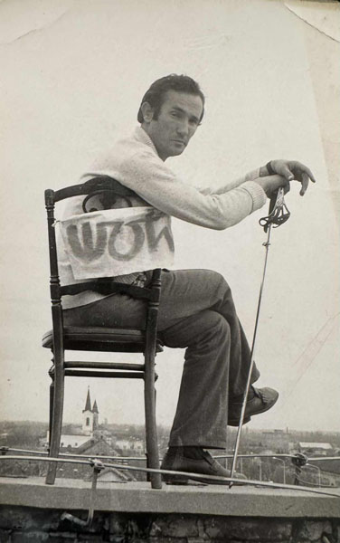

„Crtež je nešto uzvišeno. To vam je rentgentski snimak slikara. Ako slikara rezrežete uzduž i ne procuri iz njega tuš, onda nije slikar.
Svi veliki slikari bili su veliki crtači. Slikar ne mora tačno da crta, nego dobro.”

Biografija
Ratko Šoć rođen je na Cetinju 1938. godine.
Crtač, slikar, ilustrator, pesnik, karikaturista, aforističar, grafički dizajener i nekad likovni pedagog. 1959 godine završio je srednju umetničku školu u Herceg Novom a 1975. diplomirao na Višoj pedagoškoj školi u Novom Sadu.
U periodu 1976-1977. bio je stipendista italijanske vlade na Akademiji lepih umetnosti u Rimu. Godine 1980. diplomirao je na Akademiji likovnih umetnosti u Novom Sadu.
Napisao je 1975. tekst pesme „Osam tamburaša s Petrovaradina“.
Samostalno je izlagao preko 50 puta u zemlji i inostranstvu. Učesnik je brojnih kolektivnih izložbi. Dobitnik je više nagrada i priznanja. Izloženi radovi, nastali od 1981. do 2011, rađeni su olovkom, tušem, perom i akrilnim bojama.
Živi i radi u Vrbasu.
Kontakt
Za sva pitanja u vezi izložbi, posete ateljeu, saradnje ili informacije o dostupnim radovima, slobodno se javite.